台股現股與 ETF 的當沖試算。輸入買進價和張數，看漲幾檔開始獲利；也可以從券商對帳單反推手續費折數，或在「盤後」分頁查市場摘要與個股盤後資料。
操作說明
1. 選折數
第一次開啟時選一個常用折數。選完就進入試算。之後可從試算頁右上角的折數膠囊更改。
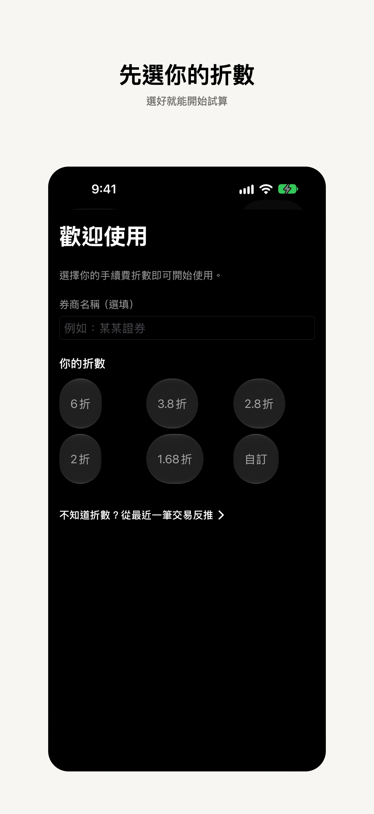
2. 試算
選股票或 ETF、多方或空方，輸入買進價和張數，按計算。結果寫出漲或跌幾檔開始獲利，表格列出每一檔的價格和損益。
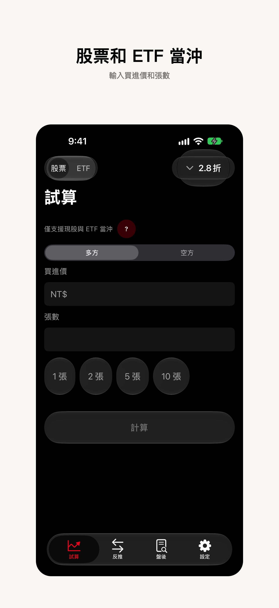
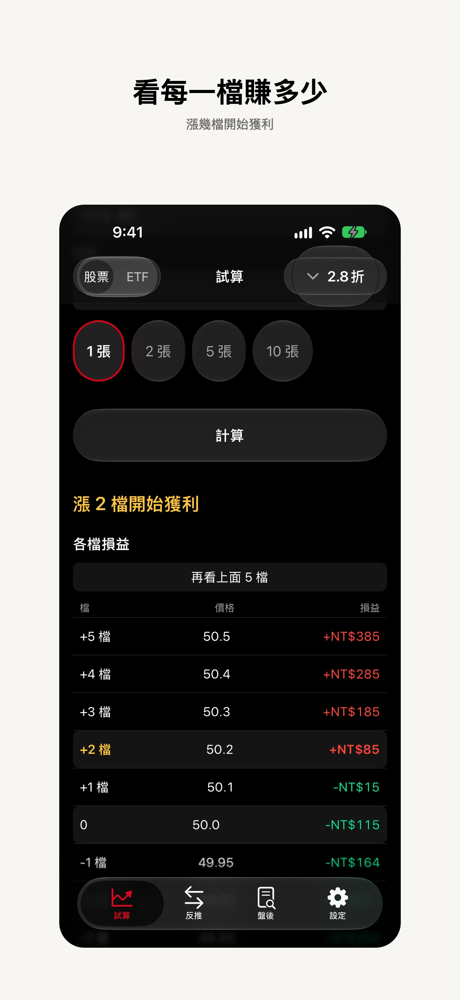
3. 從對帳單反推
打開反推，點券商。單邊明細抄價金和手續費；買賣彙總再抄買進價金和手續費合計。不要填持有成本或損益。對到好幾個折數時，可以再加一筆交易確認。算出來可設成你的折數。
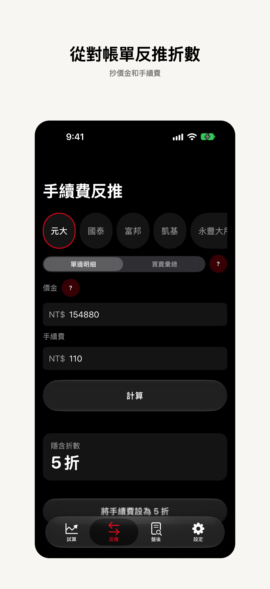
4. 看盤後資料
打開「盤後」分頁。上方的市場摘要列出加權指數、櫃買指數的漲跌、漲跌幅與成交金額，兩個市場各自標示資料日。處置股、暫停先賣後買預告預設收合，點標題展開。
輸入股票代號或名稱，可看開盤參考價、漲跌停、當沖資格、處置與注意股、除權息預告，以及盤後成交（開高低收、成交量、成交金額）。按「以參考價開始試算」，直接帶入試算頁。
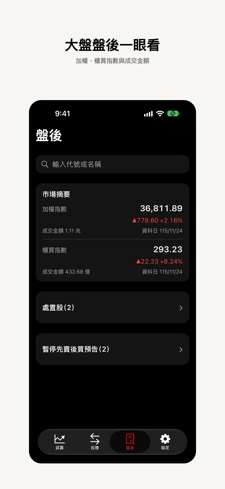
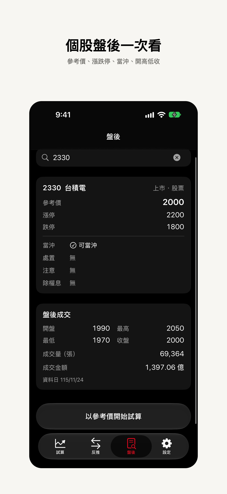
資料來自臺灣證券交易所、證券櫃檯買賣中心的盤後公開資料，每個交易日更新一次，僅供參考，請以交易所公告為準。資料來源與授權條款列在「設定 → 資料來源與授權」。
A day-trade calculator for Taiwan stocks and ETFs. Enter a buy price and lot size to see how many ticks until you profit, reverse your fee discount from a broker statement, or check the market summary and stock data on the After Hours tab.
How to use it
1. Pick a discount
The first time you open the app, pick a commission discount. You then land on the calculator. Change it later from the capsule at the top right.
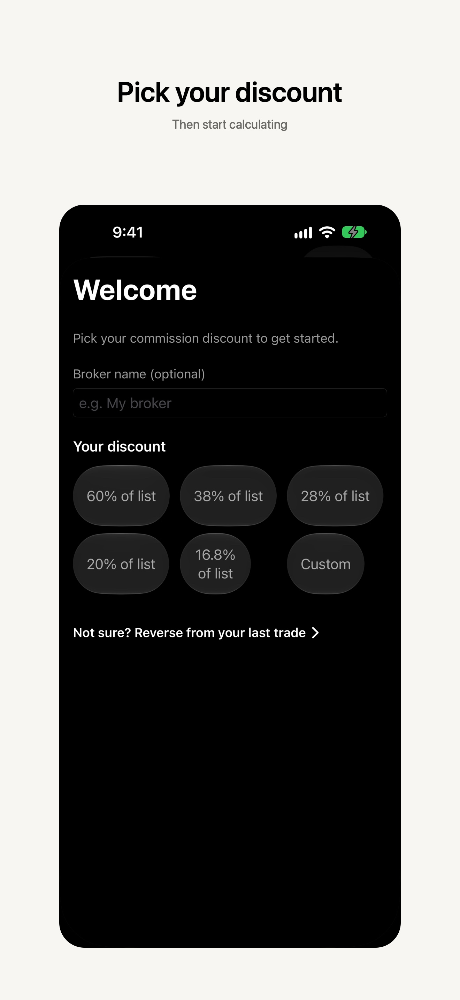
2. Calculate
Choose Stock or ETF, Long or Short, enter the buy price and lot size, then Calculate. The result shows how many ticks until you profit, and P/L at each price.
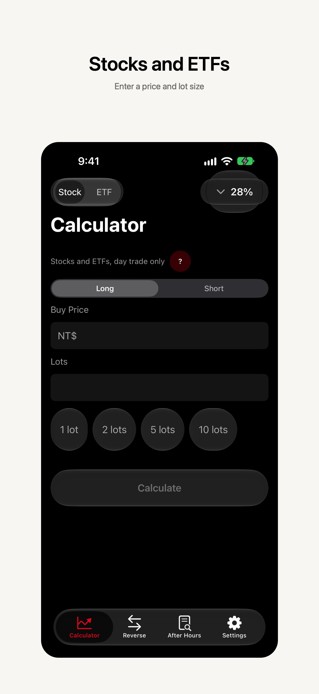
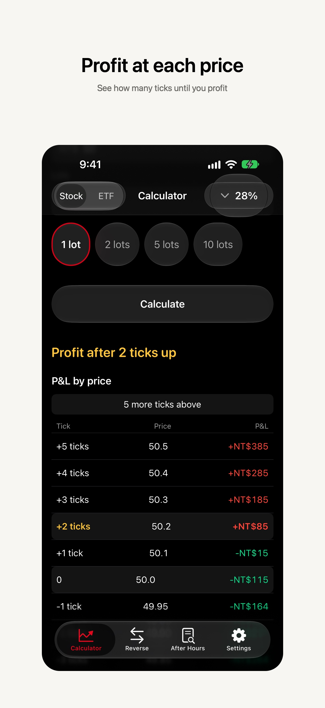
3. Reverse a statement
Open Reverse and tap your broker. For a single-side statement, copy proceeds and commission. For a combined statement, also copy buy proceeds and the combined commission. Skip cost basis and P/L. If several discounts match, add another trade to confirm. You can save the result as your discount.
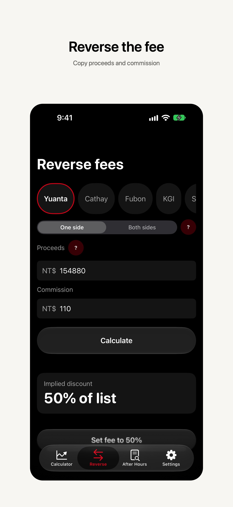
4. After-hours data
Open the After Hours tab. The market summary at the top shows TAIEX and TPEx Index change, percentage, and turnover, each with its own data date. Disposition stocks and upcoming sell-first suspensions start collapsed; tap a title to expand it.
Search by symbol or name to see the opening reference price, price limits, day-trading eligibility, disposition and attention notices, upcoming ex-rights and ex-dividend dates, and the day's open, high, low, close, volume, and turnover. Tap “Calculate from Reference Price” to start a calculation with that price.
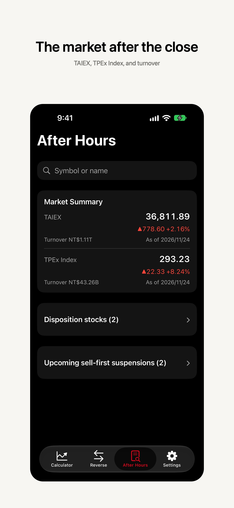
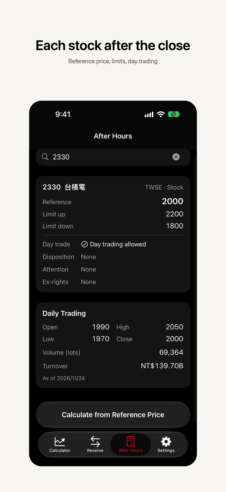
Data comes from after-hours public data from the Taiwan Stock Exchange and the Taipei Exchange, updated once every trading day. It is for reference only; exchange announcements prevail. Sources and license terms are listed in Settings > Data Sources & License.